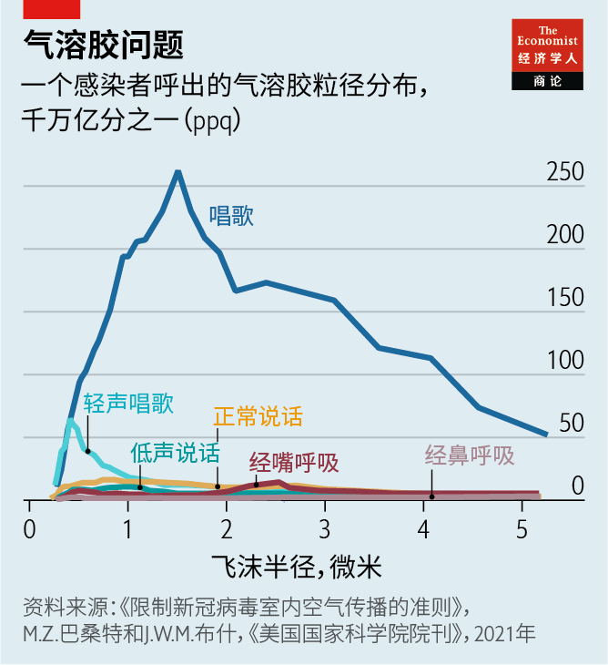

2021-06-10T15:06:32+00:00
新冠传播
改善通风将有助于抑制新冠病毒
对这种病毒的传播方式一直存在误解【深度】

去年1月24日，三个家庭共21人分头来到广州同一家餐厅吃午饭。当天是除夕。为接待比平日更多的食客，餐厅增设了桌椅，这三个家庭在一个无窗隔间里挤在三张靠墙相邻的餐桌上用餐（见平面图）。人数最多的一家共十人，前一天刚从武汉来到广州，围坐在居中的桌子边。当天晚上，其中一人出现发烧和咳嗽的症状，在医院确诊为新冠肺炎。接下来两周内，21人中有10人确诊感染。
这三个家庭之前从未有过交集，视频监控显示他们在午餐期间也没有过密切接触。广州市疾病预防控制中心初步分析后认为，感染是通过呼吸道“飞沫”传播的。但医学界一般认为，这种飞沫（即呼吸时排出的直径大于5微米的颗粒）在呼出后的飞行距离只有两三米。而当天午餐期间被感染的一些人和这个群组中的零号病人之间的距离要更远。
这就没道理了。在没有直接接触的情况下，一个受感染者怎么可能在一小时之内就感染了九个人呢？
气流认知
广州餐厅的聚集性爆发是新冠疫情第一次有记录的“超级传播”事件。对超级传播的粗略定义是在短时间内一人感染许多人的情况。现在，已记录的超级传播事件达2000多例，发生的场所林林总总，有屠宰场、大型教堂、健身中心和夜总会等。许多科学家认为，超级传播是新冠肺炎传播的主要途径。
在破解超级传播谜题的过程中，研究人员不得不重新评估他们对新冠病毒传播方式的认识。大多数有记录的超级传播事件都发生在通风不良、人群聚集的室内空间。这表明新冠病毒很容易经空气传播，这与之前认为近距离接触和受污染的物体表面是主要风险源的观点相左。这继而又表明，注意保持良好通风对下一阶段的疫情防控很重要，因为人们又将在家中、办公室、健身房、餐厅和其他封闭空间内彼此密切接触。
公共卫生专家经过了很长时间才承认，新冠肺炎经常在这种情况下通过空气传播。他们之前建议人们保持社交距离和戴口罩，目的是要切断受感染者呼出的带病毒的粘液或唾液飞沫导致的近距离直接传播。专家们过去认为间接传播病毒的主要风险不在于这些飞沫随气流长距离传播，而在于它们落在附近的物体表面上后，所携带的病毒可能在那里存活数小时甚至数天，任何触摸了这种受污染表面的人都可能将病毒通过手指转移到自己的口、眼或鼻部。如果新冠病毒与流感的传播方式相同（2020年3月世卫组织宣布将新冠疫情定性为全球性大流行病时确实是这么假定的），那么这种想法就有其道理。他们因此建议人们勤消毒物体表面和勤洗手。
医生们当时确实知道并非呼吸道呼出的所有颗粒物都会快速沉降。那些直径小于5微米的颗粒可能会变成气溶胶，在空气中停留数小时，有可能比飞沫传播得远得多，或者在封闭房间内的空气里积聚。吸入这些气溶胶的人都可能被感染。但当时假定不需要担心这种情形，因为人们认为只有在专业的医疗环境下气溶胶才值得重视，例如患者在重症监护病房中连接呼吸机时。连接呼吸机的过程就是通常所说的“插管”，由于气管导管是被强行插入患者的气管，这个过程确实会产生气溶胶。但人们没有意识到一个更广泛存在的风险。因此，世卫组织淡化了气溶胶的风险，在2020年3月底通过其官方推特和Facebook主页发布的指南中告知公众无需担心。“事实：#新冠不经空气传播。”指南如是说，并补充说任何相反的说法都是“错误信息”。
物理嫉妒
然而，医学界以外的研究人员、尤其是那些研究空气中颗粒物的物理学现象的人员认为证据指向了不同的方向。广州餐厅的聚集性感染是一次预警。大约在同一时间，在距广州1300公里的宁波，在一辆装有空气循环系统的大巴上，68名乘客中有23人在一个半小时的车程中被感染。但已知晓的疫情初期最严重的超级传播案例发生在美国。2020年3月，在华盛顿州斯卡吉特谷（Skagit Valley）的一次两个半小时的合唱团排练中，在场的61人中有53人被感染。在所有这些案例中，调查表明被感染者不都是与群组中的零号病人距离最近的人。如果病毒是通过飞沫或表面接触传播的话，那就应该是离得最近的人最易被感染。
澳大利亚布里斯班的昆士兰科技大学（Queensland University of Technology）的物理学家莉迪亚·莫拉夫斯卡（Lidia Morawska） 对上述种种都毫不意外。她职业生涯的大部分时间都在研究灰尘和雾霾等所谓的颗粒物造成的污染对空气质量的影响。2003年的SARS疫情爆发之后，她开始通过实验来说明呼吸道颗粒物在人们的喉咙中产生继而经空气传播的过程。
她的实验证明公认的医学观点是错误的。由于人呼出的是潮热、涌动的气团，在一米半高度（也就是一般人的嘴或鼻子离地的距离）喷出的直径5微米的飞沫能很容易地飘散到几十米开外才落地。此外，不只是医疗环境下会产生呼吸道颗粒物。人们在呼吸、说话、打喷嚏或唱歌的过程中会不断产生各种尺寸的液滴，包括被定义为气溶胶的那些（见图表）。
2020年7月，莫拉夫斯卡希望让公共卫生机构注意到她的这项研究。她召集了36名气溶胶和空气质量专家共同撰写了一封公开信，概述了他们发现的较小液滴也能传播病毒的证据，并呼吁世卫组织改变对空气传播的说法。“我们恳请医学界及相关国家和国际机构认识到新冠病毒通过空气传播的可能性。”他们在《临床传染病》（Clinical Infectious Diseases）杂志上写道。“在短距离到中等距离（远至数米，或在房间范围内）吸入微小呼吸道飞沫（微飞沫）而感染病毒的可能性很大，我们呼吁采取预防措施来抑制这种空气传播。”来自32个国家的另外200多名研究人员也在这封信上署了名。
科罗拉多大学博尔德分校的大气化学家何塞-路易斯·希门尼斯（Jose-Luis Jimenez）是署名人之一。他说公共卫生界对空气传播是否是新冠病毒的重要传播途径意见不一，其原因可以追溯至医学教科书中仍然收录着对呼吸道颗粒物产生和运动过程的过时的说明。
广泛传播的论断称，直径大于5微米的飞沫不会在空气中悬浮，而是会在靠近源头处沉降。世卫组织也仍在固执地宣传这一点。但以此为基础来制定公共卫生建议并不可靠。据希门尼斯说，物理学家已经证明，任何直径小于100微米的颗粒在适当条件下都可以在空气中悬浮。这一点意义重大，因为尽管勤洗手和保持社交距离仍然很重要，却并不足以阻止病毒经由空气传播，尤其是在室内。口罩会有帮助，它能减缓感染者呼出气体的流动速度，并能起到一定的过滤作用。但要保证办公室、学校、医院、护理院等地的安全，还需要改善室内通风。
风扇给力
在受到来自物理学家的压力后，世卫组织于近期承认应该通过改善通风来帮助防止新冠肺炎的传播，并在今年3月发布了改善通风的“路线图”。但这份文件远未充分认识到空气传播的危害，因而也就没有认识到防控空气传播的必要性。尽管有大量空气传播的证据，但世卫仍坚持认为新冠病毒“主要是通过感染者与他人密切接触而实现人际传播”。
不过，其他人正在根据新知识采取行动。麻省理工学院的化学工程师马丁·巴赞特（Martin Bazant）和数学家约翰·布什（John Bush）设计出了一种方法，可以计算出在一个有一名感染者的房间里待多久是安全的。两人在近期发表于《美国国家科学院院刊》的一篇论文中介绍了他们的模型。
将此模型应用于美国的学校里一个典型的班级——包含19名学生和一名教师，得出的结果是在一名感染者进入这样一个自然通风的教室后，安全时间（即感染风险高出可接受水平之前的时间）为72分钟。不过有两种方式可以延长这一时间。一种是机械通风，可将安全时间延长到7.2小时。另一种是人人戴口罩。在没有机械通风的情况下，戴口罩可将安全时间延长到8小时。但把这两种方式相结合才会取得真正可观的效果。这种方式把安全时间延长到了至多80个小时——如果每天上学6小时，就相当于近14天。加上穿插其间的周末，也就是说，对于在通风良好的教室里戴着口罩的师生来说，他们的安全时间超过了新冠肺炎患者康复的耗时（一般是一到两周）。结果是，校内传播将会变得很少见。
需要注意的是，这个模型假设学生在教室里尽量少说话、活动或唱歌。但体育活动类的课通常就是在户外的，而音乐课也可以改到户外。至于少说话，老师可能巴不得有一个无懈可击的理由要求学生们在课堂上闭上嘴巴。
感染风险在室内并不总是均匀分布的。因此，位于明尼阿波利斯市的明尼苏达大学的机械工程师洪家荣运用计算机模型，根据感染者的位置以及附近风扇或空气过滤器的位置研究气溶胶在教室里的传播情况。假设老师是感染者，因而会在教室前面释放载有病毒的气溶胶，模型显示，在教室前面放置空气净化器或排风扇会产生气流，阻止这些气溶胶朝学生的方向移动。当风扇和净化器的位置高于房间内的人员时，还可实现更好的气溶胶净化效果。这是因为人体体温产生的上升气流会使得呼出的气溶胶倾向于向上漂浮。洪家荣的模型表明，即使是安装在高处的小型廉价转页扇也能发挥很好的作用，保持教室安全和防止气溶胶积聚到危险水平。
洪家荣还模拟了2020年1月出现聚集性感染的广州餐厅里的空气流动。如餐厅平面图所示，他发现携带病毒的气溶胶围绕三个受影响的用餐家庭的运动轨迹与那些最终被感染的人的座位契合。出现这一聚集性感染是因为没有外部新鲜空气补充进来，而附近的一台再循环式空调将感染者呼出的气溶胶又吹到了另外两个餐桌，在那里形成了一个被污染的密闭“大气泡”，在午餐过程中那里头的病毒越积越多。
这样看来，空气传播的风险是真实存在的。但是，房间里的人如何知道通风是否良好呢？仅仅因为房间给人感觉很宽敞、空调也一直开着，并不等同于室内空气就是洁净的。
对此莫拉夫斯卡给出了一个参考。在去年的一项（非科学）实验中，她带着一个二氧化碳测量仪去了她家附近一家面积大、层高高且装有空调的餐厅。二氧化碳浓度可用作衡量空气清洁程度的有用指标。室外空气中的二氧化碳浓度约为400ppm（1ppm为百万分之一），在人体呼出气体中的浓度约为40,000ppm。因此，在房间里呼气会逐渐提高二氧化碳浓度，除非有足够的通风移除过量的二氧化碳。
根据空气质量专家的说法，房间内二氧化碳浓度低于500ppm表明通风良好。浓度达到800ppm时，一个人吸入的空气中有1%是他人呼出没多久的。浓度达到4400ppm时，这个比例会上升到10%，就会被列为危险水平。这么高的浓度只有在通风不佳的拥挤空间中才会出现。为了将感染新冠肺炎的风险保持在较低水平，二氧化碳浓度应远低于700ppm。
莫拉夫斯卡做这项实验时，餐厅里有10个人，远少于正常情况下餐厅的接客量。她刚到餐厅时二氧化碳浓度就已经达到1000ppm，一小时内就已飙升至2000ppm。“我们在晚餐期间又多坐了一个小时左右，”她说，“所以，如果餐厅里有受感染者，那可能就要出问题了。”

虽然这个实验只是观察性的，但仍指出了一个严重的风险，而且不仅限于新冠肺炎的传播。从头痛、疲劳和呼吸急促，到皮肤刺激、头晕和恶心，种种症状都与通风不良有关。通风不良还与缺勤率升高和生产率下降有关。
解决所有这些问题所需的通风措施并不麻烦，但现有的法规和设计标准往往有不同的目标。目前更多强调的是保存热量，这样就能节能。这往往意味着让空气再循环流动，而不是与外界交换新鲜空气。（频繁更新机舱空气的客机是个例外。）
在人多拥挤的夜总会，或人们大口喘气的健身房等场所，仅靠通风无法降低健康风险，这时在通风系统中加入空气过滤功能是个简便易行的方法。也可以在空调系统中或房间天花板附近安装杀菌紫外线灯，给空气消毒。
全都要变
公众意识也需要转变。“在这次疫情之前，大家完全可以接受有人在办公室里咳嗽、打喷嚏、传播病毒，”莫拉夫斯卡说，“谁也不会说什么——即使是那些了解病毒是怎么传播的人。”
这种满不在乎的态度必须纠正，她说。世卫组织必须承认需要控制空气传播的病原体，各国政府必须同意并实施全面的室内空气质量标准，保证人们的健康。确保合规的一种方法可能是为建筑物颁发通风合格证书，类似于现在发给餐厅的卫生许可证。她补充说，还应该通过监视器和传感器来显示室内二氧化碳浓度或其他相关指标，定时向住户提供有关空气质量的信息。
对于新建筑来说，这应该不会增加太多成本，不过更换现有通风系统可能代价不菲。但也不会高过新冠肺炎的代价。如果室内空气质量改善还能降低缺勤率、提高生产率，那么这些收益可能会弥补改造的成本。“尽管详细的经济分析尚待完成，”莫拉夫斯卡在近期的《科学》杂志上写道，“现有证据表明，防控空气传播感染的社会成本要低于不加防控的代价。”
2021-06-10T15:06:32+00:00
Covid transmission
Improving ventilation will help curb SARS-CoV-2
There has been a misunderstanding about how the virus spreads

ON JANUARY 24TH 2020 three families, together numbering 21 people, came independently to eat lunch at a restaurant in Guangzhou. It was the eve of the Chinese New Year. Extra seating had been squeezed in to accommodate more patrons than usual, and these families were crowded onto neighbouring tables along one wall of the windowless room (see plan). The largest of them—a party of ten who had arrived the day before from Wuhan—sat around the middle table. Later that day, one of their number developed fever and a cough and, at a hospital, was diagnosed with covid-19. Within two weeks, ten of the 21 were confirmed as being infected with SARS-CoV-2.
The families involved had never met and video footage showed they had no close contact during the lunch. An initial analysis by the Guangzhou Centre for Disease Control and Prevention proposed that the infection had spread via respiratory “droplets”. But medical lore has it that such droplets—defined as particles expelled while breathing that are more than five microns across—cannot travel more than a couple of metres after they have been exhaled. And some of those who became infected during the lunch were farther than that from the “index” patient.
It made no sense. How could a single infected person transmit the virus to nine others in just an hour when there had been no direct contact between them?
Current thinking
The outbreak at the Guangzhou restaurant was the first recorded “superspreading” event of the pandemic. Superspreading is loosely defined as being when a single person infects many others in a short space of time. More than 2,000 cases of it have now been recorded—in places as varied as slaughterhouses, megachurches, fitness centres and nightclubs—and many scientists argue that it is the main means by which covid-19 is transmitted.
In cracking the puzzle of superspreading, researchers have had to re-evaluate their understanding of SARS-CoV-2’s transmission. Most documented superspreadings have happened indoors and involved large groups gathered in poorly ventilated spaces. That points to SARS-CoV-2 being a virus which travels easily through the air, in contradistinction to the early belief that short-range encounters and infected surfaces were the main risks. This, in turn, suggests that paying attention to the need for good ventilation will be important in managing the next phase of the pandemic, as people return to mixing with each other inside homes, offices, gyms, restaurants and other enclosed spaces.
It has taken a long time for public-health experts to acknowledge that covid-19 routinely spreads through the air in this way. Social distancing and mask-wearing were recommended with the intention of cutting direct, close-range transmission by virus-carrying droplets of mucus or saliva breathed out by infected individuals. The main risk of spreading the illness indirectly was thought to come not from these droplets being carried long distances by air currents, but rather by their landing on nearby surfaces, on which viruses they were harbouring might survive for hours, or even days. Anyone who touched such an infected surface could then transfer those viruses, via their fingers, to their mouth, eyes or nose. This makes sense if SARS-CoV-2 spreads in the same way as influenza—which was indeed the hypothesis in March 2020, when the World Health Organisation (WHO) declared the start of the covid-19 pandemic. Hence the advice to disinfect surfaces and wash hands frequently.
Doctors did know at the time that not all respiratory particles fall fast. Those smaller than five microns can become aerosols, staying aloft for hours and potentially travelling much farther than droplets, or simply accumulating in the air within a closed room. Anyone inhaling these aerosols could then become infected. But this was assumed not to matter, because aerosols were thought to be relevant only in specialist medical settings, such as when patients are attached to a ventilator in an intensive-care unit. Intubation, as this process is known, does indeed create aerosols, as the breathing tube is forced down a patient’s trachea. But a wider risk was not perceived. The WHO therefore played down the risks of aerosols, issuing guidance via its Twitter and Facebook pages at the end of March 2020 that the general public need not worry. “FACT: #COVID19 is NOT airborne,” it said, adding that any claims to the contrary were “misinformation”.
Physics envy
Researchers outside the medical world, however—especially those who study the physics of particles in the air—felt the evidence pointed in a different direction. The Guangzhou restaurant outbreak was an early warning. Around the same time, 1,300km across the country in Ningbo, 23 of 68 passengers on a bus fitted with an air-recycling system had been infected during a one-and-a-half-hour journey. But the worst known case of superspreading early in the pandemic was American. This happened at a choir practice in Skagit Valley, Washington State, in March 2020. Of the 61 people present during a two-and-a-half-hour meeting, 53 became infected. In all these cases, investigation showed that those infected were not necessarily the people closest to the index patients, as might be expected if transmission had been by droplet or surface contact.
None of this surprised Lidia Morawska, a physicist at the Queensland University of Technology, in Brisbane, Australia. She had spent much of her career studying how pollution caused by so-called particulate matter, such as dust and smog, affects air quality. After the original SARS outbreak, which happened in 2003, she began experiments to show how respiratory particles are generated in people’s throats and then transported through the air.
She demonstrated that received medical wisdom is wrong. Because exhaled breath is a moist, hot, turbulent cloud of air, a five-micron-wide droplet released at a height of one and a half metres (about the distance above ground of the average mouth or nose) can easily be carried dozens of metres before settling. Also, the generation of respiratory particles is not restricted to medical settings. Liquid drops of all sizes—including those defined as aerosols—are continuously shed while people are breathing, talking, sneezing or singing (see chart).
In July 2020 Dr Morawska wanted to bring this work to the attention of public-health agencies. She assembled a group of 36 experts on aerosols and air quality to write an open letter outlining their evidence for infection by smaller liquid drops and calling on the WHO to change its tune on airborne transmission. “We appeal to the medical community and to the relevant national and international bodies to recognise the potential for airborne spread of coronavirus disease 2019 (covid-19),” they wrote in Clinical Infectious Diseases. “There is significant potential for inhalation exposure to viruses in microscopic respiratory droplets (microdroplets) at short to medium distances (up to several metres, or room scale), and we are advocating for the use of preventive measures to mitigate this route of airborne transmission.” More than 200 other researchers from 32 countries also signed the letter.
One signatory was Jose-Luis Jimenez, an atmospheric chemist at the University of Colorado, Boulder. He says that the confusion in health circles over whether or not airborne transmission of SARS-CoV-2 is important can be traced back to medical textbooks that still contain outdated descriptions of how respiratory particles are produced and move.
But the widespread assertion, still stubbornly promulgated by the WHO, that droplets above five microns in diameter do not stay airborne, but rather settle close to their source, is a dodgy foundation on which to build public-health advice. According to Dr Jimenez, physicists have shown that any particle less than 100 microns across can become airborne in the right circumstances. All of this matters because hand-washing and social distancing, though they remain important, are not enough to stop an airborne virus spreading, especially indoors. Masks will help, by slowing down and partially filtering an infectious person’s exhalations. But to keep offices, schools, hospitals, care homes and so on safe also requires improvements in their ventilation.
Fan-tastic
Under pressure from physicists, the WHO recently acknowledged that better ventilation should be used to help prevent covid-19’s spread—and in March it published a “roadmap” to that effect. But the document fell far short of properly recognising the hazard of airborne transmission and, therefore, the need to control it. Despite overwhelming evidence that it happens, the agency still maintained that SARS-CoV-2 “mainly spreads between people when an infected person is in close contact with another person”.
Others, though, are acting on the new knowledge. Martin Bazant, a chemical engineer, and John Bush, a mathematician, both at the Massachusetts Institute of Technology, have devised a way to calculate how long it would be safe to stay within a room that contains an infected person. The pair described their model in a paper in a recent issue of the Proceedings of the National Academy of Sciences.
Applied to a typical American school class of 19 pupils and a teacher, the safe time after an infected individual enters a classroom that is naturally ventilated (that is, how long before the risk of infection is unacceptably high) is 72 minutes. This period can, though, be extended in two ways. One is by mechanical ventilation of the room, which increases the safe time to 7.2 hours. The other is by everyone wearing masks. In the absence of mechanical ventilation, mask-wearing increases the safe time to eight hours. But the real benefit comes from combining these approaches. That pushes the safe time up to 80 hours—almost 14 days if a school day is six hours long. Add in intervening weekends and a class wearing masks in a school room with adequate ventilation would thereby be safe for longer than the time it takes to recover from covid-19, which is typically between one and two weeks. School transmissions would thus be rare.
A caveat is that the modelling assumed a classroom with minimal talking, physical activity or singing by the pupils. But games lessons would usually be outdoors and singing lessons could be. As to too much talking, teachers might welcome an unimpeachable reason to tell pupils to keep quiet in class.
Infection risk will not always be distributed evenly around a room. Jiarong Hong, a mechanical engineer at the University of Minnesota, Minneapolis, therefore used computer models to study how aerosols would spread in a classroom, according to the location of an infected individual and the position of nearby fans or air filters. Assuming the teacher was infected, and so was releasing virus-laden aerosols at the front of the class, Dr Hong’s modelling shows that placing an air cleaner or extractor fan at the front of the room sets up an airflow which prevents the movement of such aerosols towards the pupils. An even better aerosol-cleansing effect is achieved when the fans and filters are elevated above the people in the room. This takes advantage of the rising air plumes created by body heat, which mean that exhaled aerosols tend to float upwards. Dr Hong’s modelling shows that even small, cheap box fans mounted in this way would do a good job of keeping classrooms safe and preventing aerosols from building up to dangerous levels.
Dr Hong has also modelled the air flow in the Guangzhou restaurant outbreak of January 2020. As the plan shows, he found that the movements of virus-laden aerosols around the three affected families of diners matched the seating positions of the people who eventually became sick. The outbreak occurred because there was no source of external fresh air and a nearby recirculating air conditioner redistributed aerosols from the infected person to the other tables, creating a contaminated bubble of air that was increasingly burdened with viruses over the course of the lunch.
The risk, then, is real. But how can the occupants of a room know whether it is well-ventilated? Just because a room feels spacious and an air conditioner is operating does not mean the air inside it is clean.
Here, Dr Morawska has a suggestion. In a (non-scientific) experiment last year, she took a carbon-dioxide meter into a large, high-ceilinged, air-conditioned restaurant near her home. CO2 concentrations can be a useful proxy for clean air. Outdoor air contains around 400 parts per million (ppm) of the gas, and people’s exhaled breath contains around 40,000ppm. Exhaling into a room therefore gradually raises its CO2 concentration unless the ventilation is good enough to remove the excess.
According to experts on air quality, anything below 500ppm in a room means the ventilation is good. At 800ppm, 1% of the air someone is breathing has already been exhaled recently by someone else. At 4,400ppm, this rises to 10%, and would be classed as dangerous. These sorts of levels are seen only in crowded spaces with poor airflow. To keep the risk of covid-19 low, CO2 levels should be well below 700ppm.
When Dr Morawska conducted her experiment, the restaurant had ten people in it—far fewer than would normally be allowed—and the CO2 concentration was already 1,000ppm when she arrived. Within an hour it had jumped to 2,000ppm. “We continued sitting during the dinner for another hour or so,” she says. “So if there was someone infected there, well this could have been a problem.”

Though anecdotal, that tale indicates a serious risk—and one which resonates beyond covid-19. All sorts of symptoms, from headaches, fatigue and shortness of breath to skin-irritation, dizziness and nausea, are linked to poor ventilation. It has also been connected with more absences from work and lower productivity.
The ventilation measures needed to deal with all this are not difficult, but existing regulations and design standards often have different objectives—particularly, these days, conserving heat and thus reducing energy consumption. That often means recirculating air, rather than exchanging it with fresh air from the outside world. (An exception is passenger aircraft, which refresh cabin air frequently.)
In situations where it is not possible to reduce health risks by ventilation alone—for example, places like nightclubs, where there are lots of people crowded together, or gyms, where they are breathing heavily—air filtration could easily be incorporated into ventilation systems. Air could also be disinfected, using germicidal ultraviolet lamps placed within air-conditioning systems or near ceilings in rooms.
All change
And then there is public awareness. “Before this pandemic it was completely socially acceptable to come to the office coughing, sneezing, spreading viruses around,” says Dr Morawska. “No one would say anything—even people educated to understand how infections are transmitted.”
That insouciance must be corrected, she says. The WHO must acknowledge the need to control airborne pathogens and governments must agree and enforce comprehensive standards for indoor air quality that keeps people healthy. One way to ensure compliance might be to issue ventilation certificates for buildings, similar to the food-hygiene certificates which already exist for restaurants. Occupants should also be given information about air quality routinely, she adds, through the use of monitors and sensors that can display a room’s carbon-dioxide levels or other relevant measures.
For new buildings this should not cost much extra, though replacing exiting ventilation systems might be costly. But not as costly as covid-19 has been. And if improvements in indoor air quality also reduced absenteeism and improved productivity, those gains might cover that cost. “Although detailed economic analyses remain to be done,” wrote Dr Morawska in a recent edition of Science, “the existing evidence suggests that controlling airborne infections can cost society less than it would to bear them.” ■
2021-06-10T15:06:32+00:00
新冠傳播
改善通風將有助於抑制新冠病毒
對這種病毒的傳播方式一直存在誤解【深度】
去年1月24日，三個家庭共21人分頭來到廣州同一家餐廳吃午飯。當天是除夕。為接待比平日更多的食客，餐廳增設了桌椅，這三個家庭在一個無窗隔間里擠在三張靠牆相鄰的餐桌上用餐（見平面圖）。人數最多的一家共十人，前一天剛從武漢來到廣州，圍坐在居中的桌子邊。當天晚上，其中一人出現發燒和咳嗽的癥狀，在醫院確診為新冠肺炎。接下來兩周內，21人中有10人確診感染。
這三個家庭之前從未有過交集，視頻監控顯示他們在午餐期間也沒有過密切接觸。廣州市疾病預防控制中心初步分析後認為，感染是通過呼吸道“飛沫”傳播的。但醫學界一般認為，這種飛沫（即呼吸時排出的直徑大於5微米的顆粒）在呼出後的飛行距離只有兩三米。而當天午餐期間被感染的一些人和這個群組中的零號病人之間的距離要更遠。
這就沒道理了。在沒有直接接觸的情況下，一個受感染者怎麼可能在一小時之內就感染了九個人呢？
氣流認知
廣州餐廳的聚集性爆發是新冠疫情第一次有記錄的“超級傳播”事件。對超級傳播的粗略定義是在短時間內一人感染許多人的情況。現在，已記錄的超級傳播事件達2000多例，發生的場所林林總總，有屠宰場、大型教堂、健身中心和夜總會等。許多科學家認為，超級傳播是新冠肺炎傳播的主要途徑。
在破解超級傳播謎題的過程中，研究人員不得不重新評估他們對新冠病毒傳播方式的認識。大多數有記錄的超級傳播事件都發生在通風不良、人群聚集的室內空間。這表明新冠病毒很容易經空氣傳播，這與之前認為近距離接觸和受污染的物體表面是主要風險源的觀點相左。這繼而又表明，注意保持良好通風對下一階段的疫情防控很重要，因為人們又將在家中、辦公室、健身房、餐廳和其他封閉空間內彼此密切接觸。
公共衛生專家經過了很長時間才承認，新冠肺炎經常在這種情況下通過空氣傳播。他們之前建議人們保持社交距離和戴口罩，目的是要切斷受感染者呼出的帶病毒的粘液或唾液飛沫導致的近距離直接傳播。專家們過去認為間接傳播病毒的主要風險不在於這些飛沫隨氣流長距離傳播，而在於它們落在附近的物體表面上後，所攜帶的病毒可能在那裡存活數小時甚至數天，任何觸摸了這種受污染表面的人都可能將病毒通過手指轉移到自己的口、眼或鼻部。如果新冠病毒與流感的傳播方式相同（2020年3月世衛組織宣布將新冠疫情定性為全球性大流行病時確實是這麼假定的），那麼這種想法就有其道理。他們因此建議人們勤消毒物體表面和勤洗手。
醫生們當時確實知道並非呼吸道呼出的所有顆粒物都會快速沉降。那些直徑小於5微米的顆粒可能會變成氣溶膠，在空氣中停留數小時，有可能比飛沫傳播得遠得多，或者在封閉房間內的空氣里積聚。吸入這些氣溶膠的人都可能被感染。但當時假定不需要擔心這種情形，因為人們認為只有在專業的醫療環境下氣溶膠才值得重視，例如患者在重症監護病房中連接呼吸機時。連接呼吸機的過程就是通常所說的“插管”，由於氣管導管是被強行插入患者的氣管，這個過程確實會產生氣溶膠。但人們沒有意識到一個更廣泛存在的風險。因此，世衛組織淡化了氣溶膠的風險，在2020年3月底通過其官方推特和Facebook主頁發布的指南中告知公眾無需擔心。“事實：#新冠不經空氣傳播。”指南如是說，並補充說任何相反的說法都是“錯誤信息”。
物理嫉妒
然而，醫學界以外的研究人員、尤其是那些研究空氣中顆粒物的物理學現象的人員認為證據指向了不同的方向。廣州餐廳的聚集性感染是一次預警。大約在同一時間，在距廣州1300公里的寧波，在一輛裝有空氣循環系統的大巴上，68名乘客中有23人在一個半小時的車程中被感染。但已知曉的疫情初期最嚴重的超級傳播案例發生在美國。2020年3月，在華盛頓州斯卡吉特谷（Skagit Valley）的一次兩個半小時的合唱團排練中，在場的61人中有53人被感染。在所有這些案例中，調查表明被感染者不都是與群組中的零號病人距離最近的人。如果病毒是通過飛沫或表面接觸傳播的話，那就應該是離得最近的人最易被感染。
澳大利亞布里斯班的昆士蘭科技大學（Queensland University of Technology）的物理學家莉迪亞·莫拉夫斯卡（Lidia Morawska） 對上述種種都毫不意外。她職業生涯的大部分時間都在研究灰塵和霧霾等所謂的顆粒物造成的污染對空氣質量的影響。2003年的SARS疫情爆發之後，她開始通過實驗來說明呼吸道顆粒物在人們的喉嚨中產生繼而經空氣傳播的過程。
她的實驗證明公認的醫學觀點是錯誤的。由於人呼出的是潮熱、涌動的氣團，在一米半高度（也就是一般人的嘴或鼻子離地的距離）噴出的直徑5微米的飛沫能很容易地飄散到幾十米開外才落地。此外，不只是醫療環境下會產生呼吸道顆粒物。人們在呼吸、說話、打噴嚏或唱歌的過程中會不斷產生各種尺寸的液滴，包括被定義為氣溶膠的那些（見圖表）。
2020年7月，莫拉夫斯卡希望讓公共衛生機構注意到她的這項研究。她召集了36名氣溶膠和空氣質量專家共同撰寫了一封公開信，概述了他們發現的較小液滴也能傳播病毒的證據，並呼籲世衛組織改變對空氣傳播的說法。“我們懇請醫學界及相關國家和國際機構認識到新冠病毒通過空氣傳播的可能性。”他們在《臨床傳染病》（Clinical Infectious Diseases）雜誌上寫道。“在短距離到中等距離（遠至數米，或在房間範圍內）吸入微小呼吸道飛沫（微飛沫）而感染病毒的可能性很大，我們呼籲採取預防措施來抑制這種空氣傳播。”來自32個國家的另外200多名研究人員也在這封信上署了名。
科羅拉多大學博爾德分校的大氣化學家何塞-路易斯·希門尼斯（Jose-Luis Jimenez）是署名人之一。他說公共衛生界對空氣傳播是否是新冠病毒的重要傳播途徑意見不一，其原因可以追溯至醫學教科書中仍然收錄著對呼吸道顆粒物產生和運動過程的過時的說明。
廣泛傳播的論斷稱，直徑大於5微米的飛沫不會在空氣中懸浮，而是會在靠近源頭處沉降。世衛組織也仍在固執地宣傳這一點。但以此為基礎來制定公共衛生建議並不可靠。據希門尼斯說，物理學家已經證明，任何直徑小於100微米的顆粒在適當條件下都可以在空氣中懸浮。這一點意義重大，因為儘管勤洗手和保持社交距離仍然很重要，卻並不足以阻止病毒經由空氣傳播，尤其是在室內。口罩會有幫助，它能減緩感染者呼出氣體的流動速度，並能起到一定的過濾作用。但要保證辦公室、學校、醫院、護理院等地的安全，還需要改善室內通風。
風扇給力
在受到來自物理學家的壓力後，世衛組織於近期承認應該通過改善通風來幫助防止新冠肺炎的傳播，並在今年3月發布了改善通風的“路線圖”。但這份文件遠未充分認識到空氣傳播的危害，因而也就沒有認識到防控空氣傳播的必要性。儘管有大量空氣傳播的證據，但世衛仍堅持認為新冠病毒“主要是通過感染者與他人密切接觸而實現人際傳播”。
不過，其他人正在根據新知識採取行動。麻省理工學院的化學工程師馬丁·巴贊特（Martin Bazant）和數學家約翰·布什（John Bush）設計出了一種方法，可以計算出在一個有一名感染者的房間里待多久是安全的。兩人在近期發表於《美國國家科學院院刊》的一篇論文中介紹了他們的模型。
將此模型應用於美國的學校里一個典型的班級——包含19名學生和一名教師，得出的結果是在一名感染者進入這樣一個自然通風的教室後，安全時間（即感染風險高出可接受水平之前的時間）為72分鐘。不過有兩種方式可以延長這一時間。一種是機械通風，可將安全時間延長到7.2小時。另一種是人人戴口罩。在沒有機械通風的情況下，戴口罩可將安全時間延長到8小時。但把這兩種方式相結合才會取得真正可觀的效果。這種方式把安全時間延長到了至多80個小時——如果每天上學6小時，就相當於近14天。加上穿插其間的周末，也就是說，對於在通風良好的教室里戴着口罩的師生來說，他們的安全時間超過了新冠肺炎患者康復的耗時（一般是一到兩周）。結果是，校內傳播將會變得很少見。
需要注意的是，這個模型假設學生在教室里盡量少說話、活動或唱歌。但體育活動類的課通常就是在戶外的，而音樂課也可以改到戶外。至於少說話，老師可能巴不得有一個無懈可擊的理由要求學生們在課堂上閉上嘴巴。
感染風險在室內並不總是均勻分布的。因此，位於明尼阿波利斯市的明尼蘇達大學的機械工程師洪家榮運用計算機模型，根據感染者的位置以及附近風扇或空氣過濾器的位置研究氣溶膠在教室里的傳播情況。假設老師是感染者，因而會在教室前面釋放載有病毒的氣溶膠，模型顯示，在教室前面放置空氣凈化器或排風扇會產生氣流，阻止這些氣溶膠朝學生的方向移動。當風扇和凈化器的位置高於房間內的人員時，還可實現更好的氣溶膠凈化效果。這是因為人體體溫產生的上升氣流會使得呼出的氣溶膠傾向於向上漂浮。洪家榮的模型表明，即使是安裝在高處的小型廉價轉頁扇也能發揮很好的作用，保持教室安全和防止氣溶膠積聚到危險水平。
洪家榮還模擬了2020年1月出現聚集性感染的廣州餐廳里的空氣流動。如餐廳平面圖所示，他發現攜帶病毒的氣溶膠圍繞三個受影響的用餐家庭的運動軌跡與那些最終被感染的人的座位契合。出現這一聚集性感染是因為沒有外部新鮮空氣補充進來，而附近的一台再循環式空調將感染者呼出的氣溶膠又吹到了另外兩個餐桌，在那裡形成了一個被污染的密閉“大氣泡”，在午餐過程中那裡頭的病毒越積越多。
這樣看來，空氣傳播的風險是真實存在的。但是，房間里的人如何知道通風是否良好呢？僅僅因為房間給人感覺很寬敞、空調也一直開着，並不等同於室內空氣就是潔凈的。
對此莫拉夫斯卡給出了一個參考。在去年的一項（非科學）實驗中，她帶着一個二氧化碳測量儀去了她家附近一家面積大、層高高且裝有空調的餐廳。二氧化碳濃度可用作衡量空氣清潔程度的有用指標。室外空氣中的二氧化碳濃度約為400ppm（1ppm為百萬分之一），在人體呼出氣體中的濃度約為40,000ppm。因此，在房間里呼氣會逐漸提高二氧化碳濃度，除非有足夠的通風移除過量的二氧化碳。
根據空氣質量專家的說法，房間內二氧化碳濃度低於500ppm表明通風良好。濃度達到800ppm時，一個人吸入的空氣中有1%是他人呼出沒多久的。濃度達到4400ppm時，這個比例會上升到10%，就會被列為危險水平。這麼高的濃度只有在通風不佳的擁擠空間中才會出現。為了將感染新冠肺炎的風險保持在較低水平，二氧化碳濃度應遠低於700ppm。
莫拉夫斯卡做這項實驗時，餐廳里有10個人，遠少於正常情況下餐廳的接客量。她剛到餐廳時二氧化碳濃度就已經達到1000ppm，一小時內就已飆升至2000ppm。“我們在晚餐期間又多坐了一個小時左右，”她說，“所以，如果餐廳里有受感染者，那可能就要出問題了。”
雖然這個實驗只是觀察性的，但仍指出了一個嚴重的風險，而且不僅限於新冠肺炎的傳播。從頭痛、疲勞和呼吸急促，到皮膚刺激、頭暈和噁心，種種癥狀都與通風不良有關。通風不良還與缺勤率升高和生產率下降有關。
解決所有這些問題所需的通風措施並不麻煩，但現有的法規和設計標準往往有不同的目標。目前更多強調的是保存熱量，這樣就能節能。這往往意味着讓空氣再循環流動，而不是與外界交換新鮮空氣。（頻繁更新機艙空氣的客機是個例外。）
在人多擁擠的夜總會，或人們大口喘氣的健身房等場所，僅靠通風無法降低健康風險，這時在通風系統中加入空氣過濾功能是個簡便易行的方法。也可以在空調系統中或房間天花板附近安裝殺菌紫外線燈，給空氣消毒。
全都要變
公眾意識也需要轉變。“在這次疫情之前，大家完全可以接受有人在辦公室里咳嗽、打噴嚏、傳播病毒，”莫拉夫斯卡說，“誰也不會說什麼——即使是那些了解病毒是怎麼傳播的人。”
這種滿不在乎的態度必須糾正，她說。世衛組織必須承認需要控制空氣傳播的病原體，各國政府必須同意並實施全面的室內空氣質量標準，保證人們的健康。確保合規的一種方法可能是為建築物頒發通風合格證書，類似於現在發給餐廳的衛生許可證。她補充說，還應該通過監視器和傳感器來顯示室內二氧化碳濃度或其他相關指標，定時向住戶提供有關空氣質量的信息。
對於新建築來說，這應該不會增加太多成本，不過更換現有通風系統可能代價不菲。但也不會高過新冠肺炎的代價。如果室內空氣質量改善還能降低缺勤率、提高生產率，那麼這些收益可能會彌補改造的成本。“儘管詳細的經濟分析尚待完成，”莫拉夫斯卡在近期的《科學》雜誌上寫道，“現有證據表明，防控空氣傳播感染的社會成本要低於不加防控的代價。”